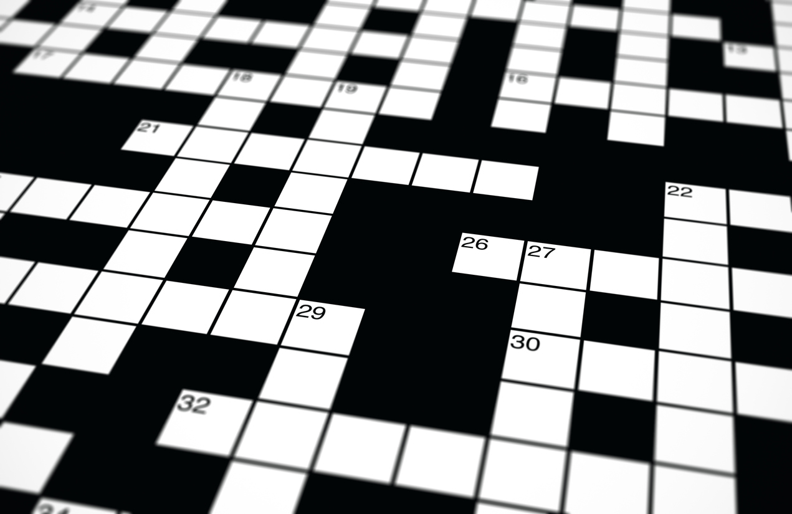
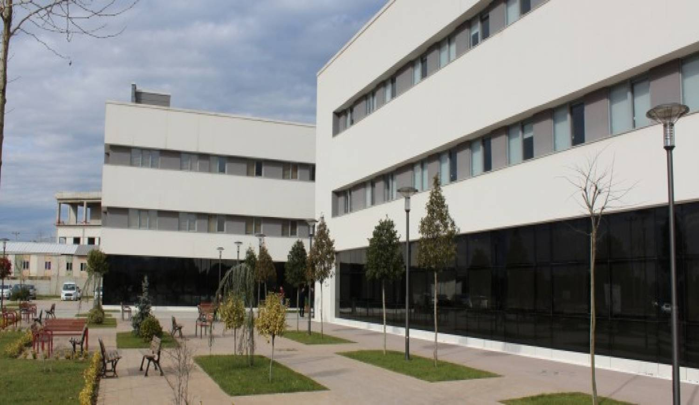
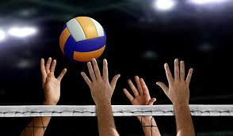

HAKKIMDA:
Merhaba, ben Zeynep Yener. Bu sitenin tasarımcısıyım. 20 yaşımdayım. Kocaeli'de doğdum, büyüdüm. 2 kız kardeşim var. İlköğrenimimi Hisareyn İlkokulunda, ortaöğrenimimi Mecit Kavan İmamhatip Ortaokulunda tamamladıktan sonra liseyi de Mehmet Akif Ersoy Kız Anadolu İmamhatip Lisesinde bitirdim. Lisede bir yıl Arapça ağırlıklı Arapça-İngilizce hazırlık okudum. Lisede çeşitli aktivitelerde yer aldım. Çeşitli okuma topluluklarında bulundum, Arapça münazara seçmelerine katıldım, katıldığım bir proje için önce okul panelinde daha sonra il panelinde moderatörlük yaptım. Edebiyat ve felsefe üzerine okumalar yaptım. Şimdi de Sakarya Üniversitesinde Bilgisiyar Mühendisliği Bölümünde 1.sınıf öğrencisiyim.

Diğer bir hobimse keman çalmak. Lisenin 1.yılı müzik öğretmenimin de destekleriyle keman çalmayı öğrenmeye başladım. Yaklaşık 1 yıl kadar birlikte çalıştık. Araya pandeminin girmesiyle birlikte çalışmalarıma tek devam etmek zorunda kaldım. Bu dönemde internetten çok yardım aldım ve 1-2 ay gibi kısa bir sürede çeşitli şarkıları çalmaya başladım.
Ortaokul yıllarımın sonuna doğru yüzme dersi aldım ve lisanslı bir yüzücü oldum. Voleybol oynamak, bisiklet sürmek de hobilerim arasında.


HOBİLERİM:
İlkokuldayken herkes biraz kitap okumuştur ama gerçek anlamda kendime ben bir okurum dediğim yıllar ortaokul yıllarımdı. 6.sınıftayken kitap okuma alışkanlığım tam anlamıyla oturmuştu. Kitap benim için boş zaman aktivitesi değildi. Aksine kitap okumak için özel olarak vaktimi ayırıyor hatta bazen uykusuz kalıyordum. Kitabın yanında sade bir Türk kahvesi içmek de aynı şekilde en sevdiğim aktivitelerden biriydi hala da öyle.
